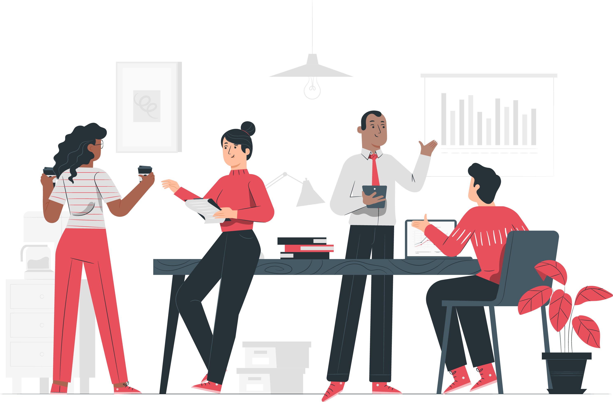
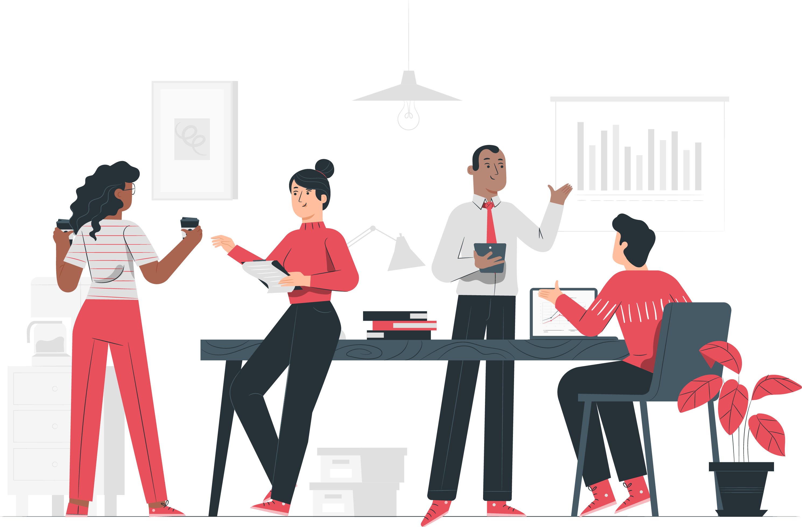

Hi, i'm Yunita!
your soon-to-be Business Analyst <3

your soon-to-be Business Analyst <3

I am a person who is kinda positive about every aspect of my life. There are many things I like to do, to see, and to experience. I like watching movies or series. I like listening to music a lot. I like to dream. I like to think something that is interesting for me. I like to see sunsets in the beach, mountain, or just on the top of my house. I like to look at the clouds in the sky with a blank mind and thinking about my life journey. I like to laugh and sad in the same time. Also, I learn to be alone and sometimes I like that. There is nothing more freeing and empowering than learning to enjoy your own company.
| |
Riwayat Pendidikan SD - UniversitasSaya menempuh pendidikan dasar di SDN Jimbaran Kulon dimulai dari tahun 2007-2013. Lalu, melanjutkan pendidikan di SMPN 1 Sidoarjo selama 3 tahun sejak 2013-2016. Lalu, dilanjut di SMAN 3 Sidoarjo mengambil peminatan MIPA mulai tahun 2016-2019. Sejak tahun 2019 hingga sekarang, saya sedang melanjutkan pendidikan tinggi di Universitas Brawijaya. |
Pengalaman OrganisasiSaya bergabung dengan Palang Merah Remaja tingkat SMA sejak tahun 2016 hingga 2018. Lalu, juga bergabung dengan Karang Taruna pada tahun 2018-2019. Sekarang, saya sedang aktif mengikuti organisasi di tingkat program studi yaitu EMSI sebagai Staff Advokesma. |

|

|
Kompetensi Keahlian di Bidang IT
|